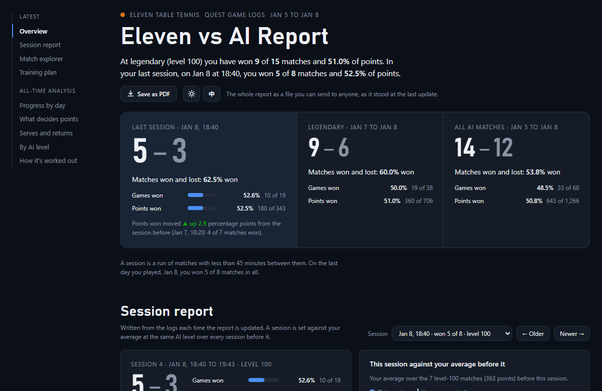
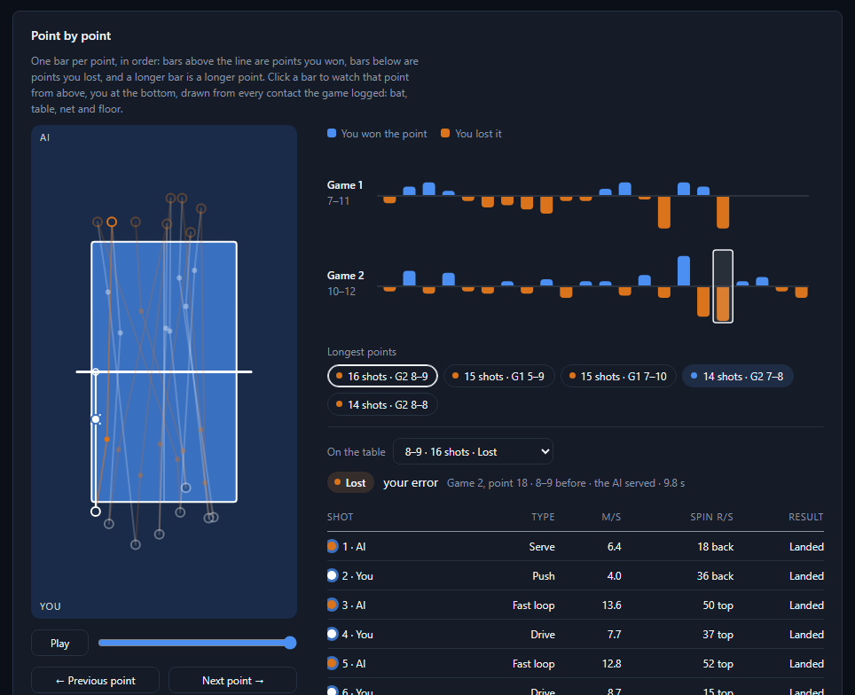

Eleven Table Tennis · Meta Quest
Your matches, point by point.
elevendash reads the log files Eleven Table Tennis keeps on your Quest and turns every match, game, point and shot into a dashboard you open in any browser. It runs on your own computer, it is free and open source, and your logs never leave your hands.
The demo is built from made-up matches against the AI, generated by the project itself.

What you get
Everything is worked out from the logs by fixed rules, so the same logs always give the same dashboard. No AI service and no account.
- A replay of every pointDrawn from the ball contacts the game logs: bat, table, net and floor, with each shot's type, speed in m/s and spin in r/s.
- A session reportResults, written notes and how the session compares with your average at the same AI level, with session and all-time win rates.
- Serves and returnsWhere your serves land, which ones win points, and how you return the AI's.
- A training planWhat to work on, ranked by how many points each item is worth to you.
- Matches you pickPick whole sessions or single matches and see your numbers over just those, set against your other matches at the same level.
- A match cardAny match against the AI as one picture to send or post: the result, every point, a few numbers and you against the AI, in the dashboard's look and language.
- Progress over timeBy day, by AI level and by what decides your points, with 11hero-style match metrics.

One file
The dashboard is a single HTML file that works offline. Send it to a coach or keep it on a static host.
Dark or light, two languages
English and Traditional Chinese, and a PDF of the whole report when you want one.
Optional videos
Upload a session's headset recording and a highlight reel to your own YouTube channel, unlisted, and every point links to its moment.
Private by design
Eleven's logs hold more than matches: your Eleven and Meta account tokens, your user id and name, the names of people you played online, sometimes your location. So elevendash keeps them on your computer.
192.168.1.20:8090./getListing and
/downloadFile. Nothing is uploaded or deleted.Never share a raw log. If a bug report needs one, make a redacted copy and read it before you share
it: elevendash redact LOG OUT removes tokens, ids, names, addresses and location.
Get started
Python 3.10 or newer, nothing else for the dashboard. Tested on Windows and Linux.
git clone https://github.com/glki6/elevendash.git
cd elevendash
python -m venv .venv
.venv\Scripts\activate # macOS, Linux: source .venv/bin/activate
pip install -e .
elevendash demo # try it first: made-up matches, no Quest needed
elevendash init ~/eleven # a private folder for your logs and results
cd ~/eleven
elevendash fetch --quest 192.168.1.20
elevendash update # fetch, build, print the session report, write site/index.htmlNo Wi-Fi sharing? Copy the ALL-*.log files off the headset any other way and run
elevendash import <folder>. The full guide is in the
README.
Made for matches against the AI
Against the AI, the game logs every ball contact by both players, so the whole dashboard works. Online matches against people are counted, with who won and the scores, but there the game logs only your own shots, so the shot-level analysis is one-sided.
elevendash is early: tested on one player's logs (Quest 3S, AI levels 75 to 100, a few hundred matches) and on generated logs. Redacted logs from other headsets, game versions and online matches are welcome; see CONTRIBUTING.